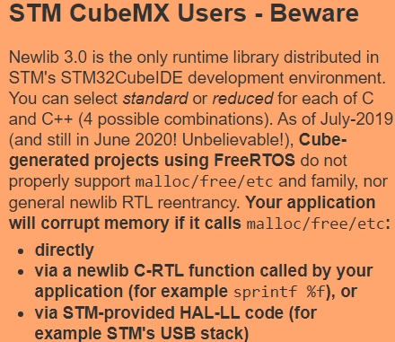
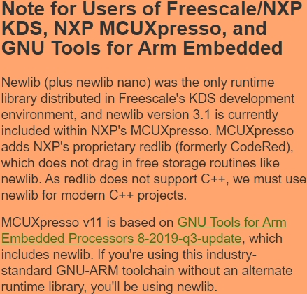
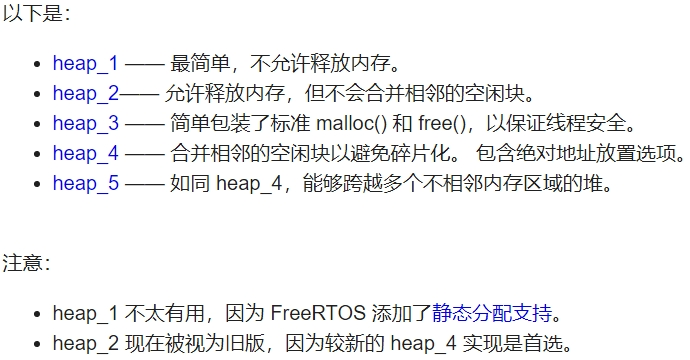
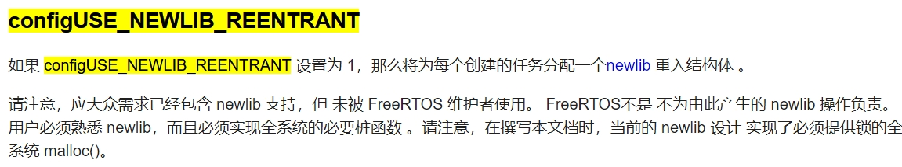
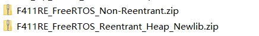

嵌入式科普(6)你听说过FreeRTOS heap6吗？
上一节介绍eclipse+Arm GNU Toolchain+newlib是MCU/MPU开发中比较通用的，FreeRTOS+heap4也是比较常见的RTOS和动态内存管理。这些都结合到一起就足以应付较复杂功能的开发，例如：以太网相关编程。
所以，在应用代码中、以太网协议栈、第三方库中不可避免的使用newlib c sprintf、malloc等功能，可能就会涉及多线程安全问题


1、STM32CubeIDE：这是STMicroelectronics提供的用于开发STM32微控制器的集成开发环境（IDE）。它集成了STM32CubeMX配置工具和STM32Cube HAL库，用于快速开发STM32微控制器的嵌入式应用程序。
2、Newlib 3.0：Newlib是一个用于嵌入式系统的C标准库实现，它提供了标准的C库函数，例如malloc、free、sprintf等。Newlib 3.0指的是Newlib的一个特定版本，可能在STM32CubeIDE中作为默认的C标准库实现。
3、FreeRTOS：FreeRTOS是一个用于嵌入式系统的开源实时操作系统（RTOS），它提供了任务调度、内存管理、同步机制等功能，适用于多任务处理的嵌入式应用。
4、malloc/free问题：在描述中提到，Cube-generated项目使用FreeRTOS时可能存在malloc/free等内存管理函数的问题。这意味着在使用FreeRTOS时，直接调用malloc/free函数、或者通过一些C标准库函数（如sprintf %f）间接调用malloc/free函数，甚至是通过STM提供的HAL库代码（如USB堆栈）间接调用malloc/free函数时，可能会导致内存损坏或其他问题。
newlib C-RTL函数：这里指的是Newlib的C运行时库函数，包括标准的C库函数，如sprintf、malloc等。在描述中提到，通过这些函数间接调用malloc/free函数可能会导致问题。
非常遗憾：FreeRTOS只解决了一半、芯片厂商并没有实现另一半
FreeRTOS使能configUSE_NEWLIB_REENTRANT
https://freertos.org/zh-cn-cmn-s/a00110.html#configUSE_NEWLIB_REENTRANT



自己封装需要的函数，增加互斥锁。
优点：按需封装
缺点：第三方库源码是否支持
关闭configUSE_TIME_SLICING
优点：不强制切换线程，间接解决
缺点：不强制切换线程，带来cpu利用率低
vTaskSuspendAll();
优点：个别情况处理办法
缺点：频繁中断，效率低
#include <stdio.h>
#include <stdlib.h>
#include "FreeRTOS.h"
#include "task.h"
#define NUM_ALLOCATIONS 1000
#define ALLOCATION_SIZE 100
void testStandardMalloc() {
for (int i = 0; i < NUM_ALLOCATIONS; i++) {
void* ptr = malloc(ALLOCATION_SIZE);
free(ptr);
}
}
void testFreeRTOSHeap() {
for (int i = 0; i < NUM_ALLOCATIONS; i++) {
void* ptr = pvPortMalloc(ALLOCATION_SIZE);
vPortFree(ptr);
}
}
int main() {
// Test standard malloc
TickType_t start = xTaskGetTickCount();
testStandardMalloc();
TickType_t end = xTaskGetTickCount();
printf("Standard malloc time: %d\n", end - start);
// Test FreeRTOS heap
start = xTaskGetTickCount();
testFreeRTOSHeap();
end = xTaskGetTickCount();
printf("FreeRTOS heap time: %d\n", end - start);
return 0;
}